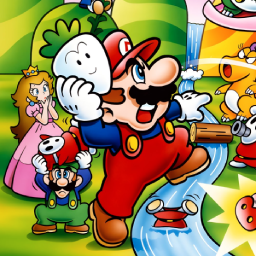

 Super Mario Bros. 2
Details
| Playtime | Not Played |
| Last Activity | Never |
| Added | 21/02/2024 3:22:44 |
| Modified | 20/05/2024 22:32:56 |
| Completion Status | Not Played |
| Library | Playnite |
| Source | |
| Platform | Nintendo Entertainment System |
| Release Date | September 1988 |
| Community Score | |
| Critic Score | |
| User Score | 0 |
| Genre | Platformer |
| Developer | Nintendo R&D2 Nintendo R&D4 |
| Publisher | Fujisankei Communications Group Nintendo |
| Feature | Single Player |
| Links | |
| Tag | |
Description
After the smash hit Super Mario Bros. in 1985, Nintendo quickly released a minor adaptation of the original with advanced difficulty titled Super Mario Bros. 2, for its mature market in Japan in 1986. However, Nintendo of America found this sequel too similar to its predecessor, and its difficulty too frustrating, for the nascent American market. This prompted a second Super Mario Bros. sequel based on Yume Kōjō: Doki Doki Panic, Nintendo's 1987 Family Computer Disk System game which had been based on a prototype platforming game and released as an advergame for Fuji Television's Yume Kōjō '87 media technology expo. The characters, enemies, and themes in Doki Doki Panic have the mascots and theme of the festival, and were adapted into the Super Mario theme to make a second Super Mario Bros. sequel.
Super Mario Bros. 2 was a resounding success, becoming the fifth-best-selling game on the NES, and was critically well-received for its design aspects and for differentiating the Super Mario series. It was re-released in Japan for the Famicom as Super Mario USA (1992), and has been remade twice, first included in the Super Mario All-Stars (1993) collection for the Super NES, and as Super Mario Advance (2001) for the Game Boy Advance. It is included as part of the Nintendo Switch Online service.